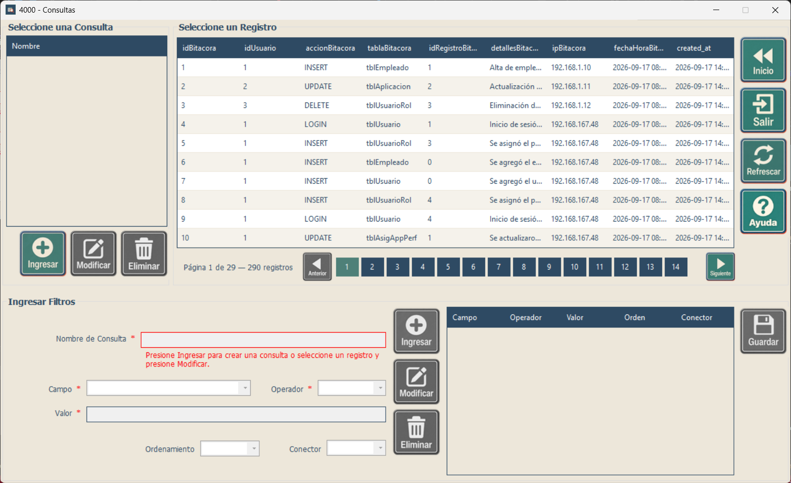

Capacitación - Consultas
Uso de consultas complejas y consultas reutilizables
Uso de consultas complejas y consultas reutilizables
Esta pantalla permite combinar filtros y ordenamientos de la tabla configurada, revisar los resultados y guardar consultas para reutilizarlas. La lista Seleccione una Consulta muestra los nombres de las consultas guardadas para la tabla actual; Mantenimiento contiene sus condiciones y Seleccione un Registro muestra los datos obtenidos.

| Control | Uso |
|---|---|
| Campo | Columna sobre la que se aplica el filtro u ordenamiento. Cambiarla borra Valor y actualiza los operadores. |
| Operador | Texto: =, <>, Contiene, Comienza con y Termina con. Números y fechas: =, <>, >, <, >= y <=. Booleanos: = y <>. Consulte los ejemplos en Consultas simples. |
| Valor | Dato que se compara. Use enteros sin decimales, punto decimal (125.50), fechas aaaa-MM-dd o dd/MM/aaaa, fecha y hora con HH:mm:ss, horas HH:mm:ss y booleanos 1, 0, true o false. Respete la longitud máxima del campo de texto. |
| Ordenamiento | ASC ordena de menor a mayor; DESC, de mayor a menor. Puede combinarlo con un filtro o crear una fila solo de ordenamiento: seleccione Campo, deje Operador vacío y elija ASC o DESC. Esa fila no requiere Valor ni Conector. |
| Conector | AND exige que se cumplan ambas condiciones; OR admite cualquiera de ellas. El primer filtro no lleva conector. Al combinar ambos, AND tiene prioridad sobre OR; la pantalla no permite agregar paréntesis. |
Ejemplo: Edad >= 18 y Estado = Activo con AND busca personas adultas activas. Nombre Comienza con Mar busca nombres como María o Marcos. Un ordenamiento ASC por Nombre presenta los nombres en orden ascendente.
| Botón o control | Función |
|---|---|
| Ingresar (consulta) | Inicia una consulta nueva y limpia el mantenimiento actual. Confirme el descarte cuando se solicite. |
| Modificar (consulta) | Carga la consulta seleccionada y habilita su edición. |
| Ingresar (filtro) | Agrega una nueva fila a Mantenimiento. Si parte de una fila seleccionada, cambie algún dato antes de ingresarla como nueva; para reemplazarla use Modificar. |
| Modificar (filtro) | Reemplaza la fila seleccionada con los datos de los controles. |
| Eliminar (filtro) | Quita la fila seleccionada y actualiza la vista previa. La primera fila de Mantenimiento no se puede eliminar; puede modificarla. |
| Guardar Consulta | Guarda una consulta nueva o los cambios de la consulta en edición. Requiere nombre y entre 1 y 100 filas de condiciones u ordenamientos. |
| Eliminar Consulta | Elimina la definición seleccionada en la lista izquierda después de confirmar. Si hay una sesión de edición, la confirmación también advierte que se descartará. |
| Refrescar | Recarga el catálogo y los datos sin filtros, limpia Mantenimiento y vuelve al estado inicial. Durante una edición solicita confirmar el descarte. |
| Consultas Simples | Solicita volver a la pantalla de filtros simples. |
| Ayuda / Salir | Abre la ayuda o solicita cerrar la ventana actual. |
| Anterior / Siguiente / páginas | Recorre los resultados, con 10 registros por página. Los controles se habilitan según las páginas disponibles. |
Haga clic en el encabezado de una columna de resultados para ordenar y vuelva a hacer clic para alternar la dirección. Haga doble clic en una fila de resultados o selecciónela y presione Enter para devolver ese registro a la pantalla que abrió Consultas.
Los errores de nombre se muestran debajo de Nombre de Consulta; los errores de filtros y los avisos sin resultados, debajo de Valor. Revise campo, operador, formato y conectores antes de volver a intentar.